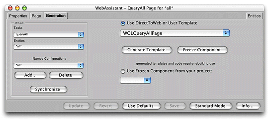
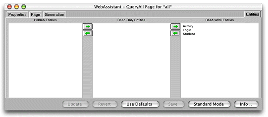
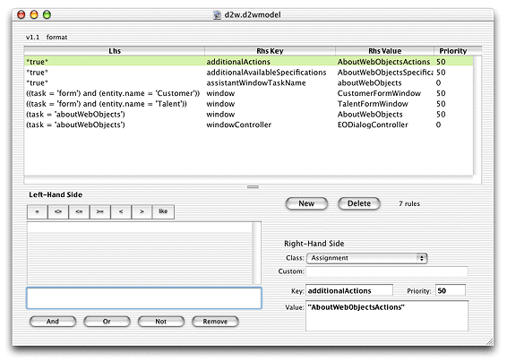

| PATH |

The Direct to Web Assistant is a Java applet that runs at the same time as your application. It communicates directly with Direct to Web and allows you to reconfigure your application in many ways. Figure 5-14 shows the Direct to Web Assistant in use.
Figure 5-13 The Direct to Web Assistant
With the assistant, you can designate which entities are read-write, read-only, or hidden, as shown in Chapter Figure 5-14. You can also set appearance parameters for most of the pages that Direct to Web generates. For example, you can control whether or not the page displays with a banner. You can also change the background color for the table the page displays, if applicable. The assistant also permits you to configure the way properties (attributes and relationships) appear on list, edit, and inspect pages.
Figure 5-14 The Entities pane of the Direct to Web Assistant
As mentioned earlier, the assistant defines a set of rules that override the default Direct to Web rules. Thus, the assistant is the preferred way to modify rules. However, sometimes you need to change the default rules or override the default rules in ways the assistant can't. You can use an application called the Rule Editor to edit the rules directly. Figure 5-15 shows the Rule Editor.
Figure 5-15 The Rule Editor
